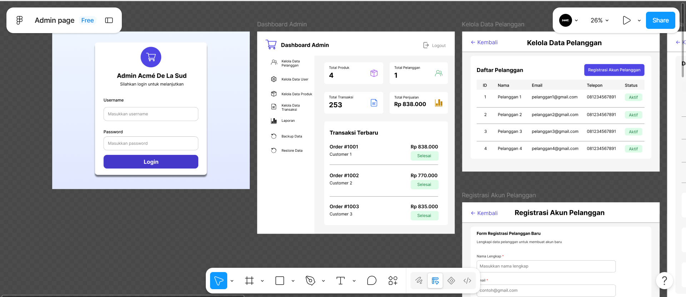
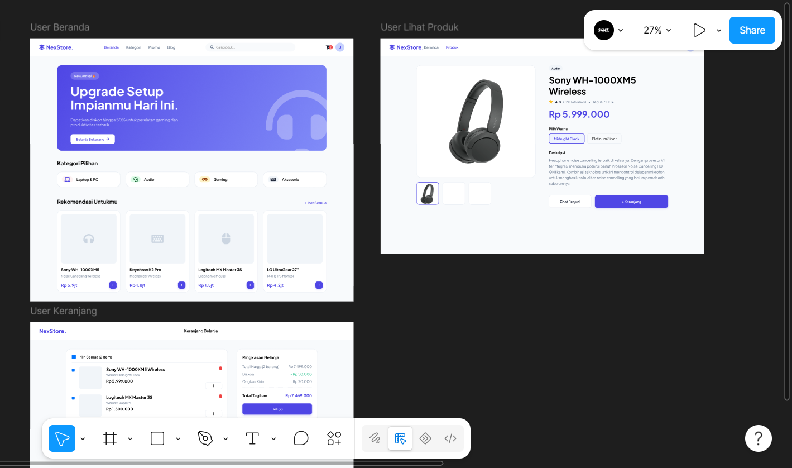
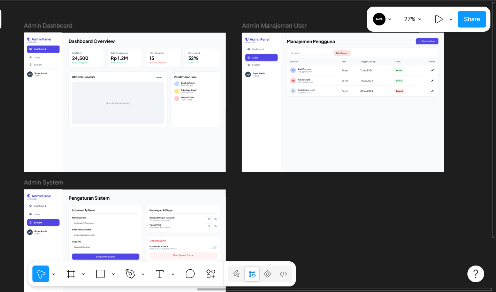

Mobile App Design
Menciptakan pengalaman seluler yang mulus, intuitif, dan berpusat pada interaksi pengguna.

Project Gamma berfokus pada perancangan antarmuka aplikasi seluler (mobile app) yang mengutamakan kemudahan penggunaan (usability) dan pengalaman pengguna (UX) yang mulus. Tantangan utamanya adalah menyederhanakan alur navigasi agar fitur-fitur inti dapat diakses dengan intuitif di layar yang terbatas.
Proses desain meliputi pembuatan user flow, wireframing layar demi layar, hingga high-fidelity prototyping interaktif. Hasil akhirnya adalah desain aplikasi yang responsif, estetis, dan siap untuk diimplementasikan oleh tim developer.

